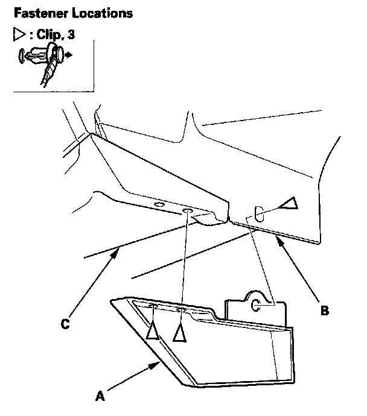

Rear Strake
Rear Strake Replacement
1. Remove the clips, then remove the rear strake (A) from the rear fender cover (B) and side sill panel (C).
2. Install the strake in the reverse order of removal, and note these items:
- If the clips are damaged or stress-whitened, replace them with new ones.
- Push the clips into place securely.